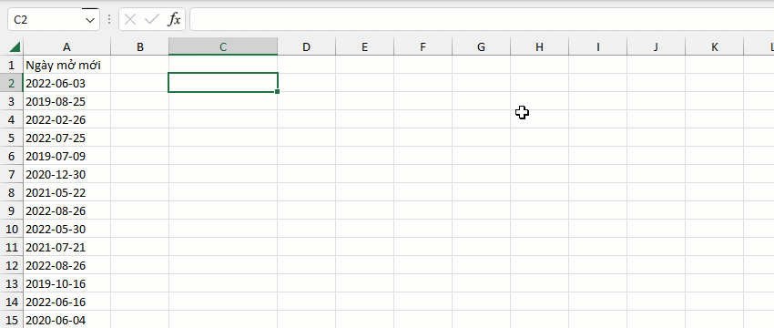

VD1: chỉ định mã định dạng cần xuất (mm/dd/yyyy).

VD2: sử dụng mã định dạng mặc định (dd/mm/yyyy).

VD3: chuyển chuỗi có định dạng (yyyy-mm-dd) về định dạng date.
FORMAT CODE
YYYYMMDD
YYYYDDMM
YYYY/MM/DD
YYYY/DD/MM
DD/MM/YYYY
MM/DD/YYYY
YYYY-MM-DD
YYYY-DD-MM
DD-MM-YYYY
MM-DD-YYYY
DD.MM.YYYY
MM.DD.YYYY
DD-Mon-YY
?D-Mon-YY
DD-Mon-YYYY
Đối với các kiểu định dạng D/M/YYYY hoặc M/D/YYYY bạn cần tránh và nên có hướng nhập liệu là DD/MM/YYYY hoặc MM/DD/YYYY.
Related function
TEXT.TIME Trích xuất hoặc kiểm tra các chuỗi con có định dạng thời gian từ chuỗi chỉ định.
TEXT.DATETIME Trích xuất các chuỗi con có định dạng datetime từ chuỗi chỉ định.
NUMBERTOWORDS Hàm đọc số thành chữ.
Return to Home